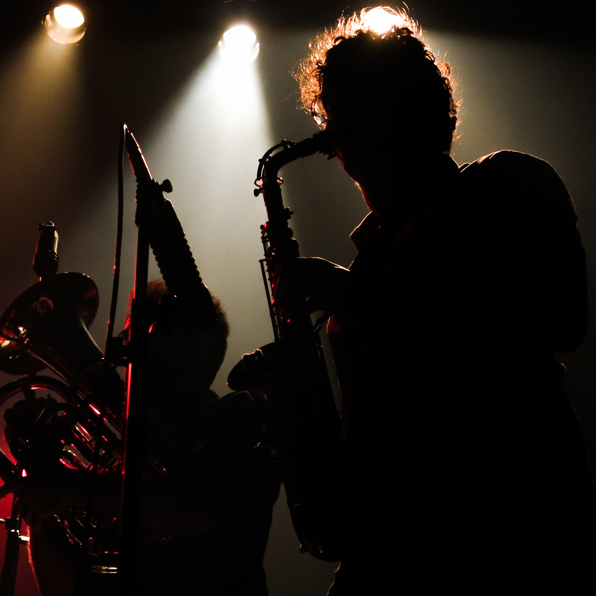

Professor formado em Saxofone pela faculdade Santa Marcelina e Mestre
em Performance em saxofone pelo Conservatório Real de Bruxelas na Bélgica
(Koninklijk Conservatorium Brussel).
Já foi professor de música da Escola Européia em Bruxelas bem como de diversas
escolas particulares em São Paulo.
Hoje dá aulas em seu estúdio no bairro da Pompéia em São Paulo - SP.
Estúdio
com ar condicionado, piano e tratamento acústico.
Alunos de todos os níveis são bem vindos.
Contato para
agendar aulas- naderfilipe@gmail.com
Filipe Nader toca saxofone, faz arranjos, escreve músicas e se diverte
tocando sousafone no seu tempo livre.
Formado
pela faculdade santa marcelina em São Paulo e mestre em
performance em saxofone jazz pelo conservatório de Bruxelas na
Bélgica (Koninklijk Conservatorium
Brussel)
Filipe toca em diversos grupos tanto no Brasil quanto na Europa.
Na Bélgica, junto do grupo Ifa
y Xango ganhou diversos prêmios como
o Jovem Talento do Jazz na Bélgica (2012) e o prêmio de melhor álbum
de estréia de jazz de 2013 pela revista
americana New York City Jazz Records.
Recentemente gravou com o recém formado grupo belga Nest o disco rub
que
tem tido boa recepção dentro da mídia especializada Europeia.
No Brasil Filipe toca, arranja e compõe com diversos grupos como Grand Bazaar,
Musica
de Selvagem, Ifa y Xango, A Espetacular Charanga do França, Charlie e os Marretas,
Dj Tudo e sua Gente de Todo Lugar, Trupe Chá de Boldo, Isadora Canto, O terno, Giovani Cidreira,
Romulo
Fróes, Garotas Suecas, Umtza Fanfarra entre outros.